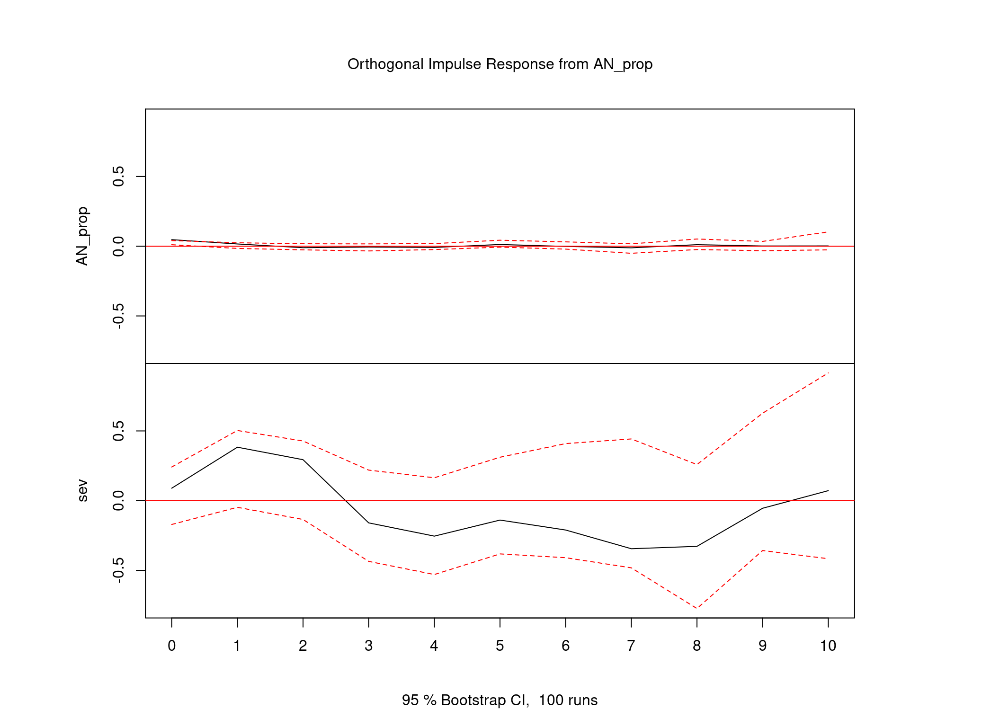
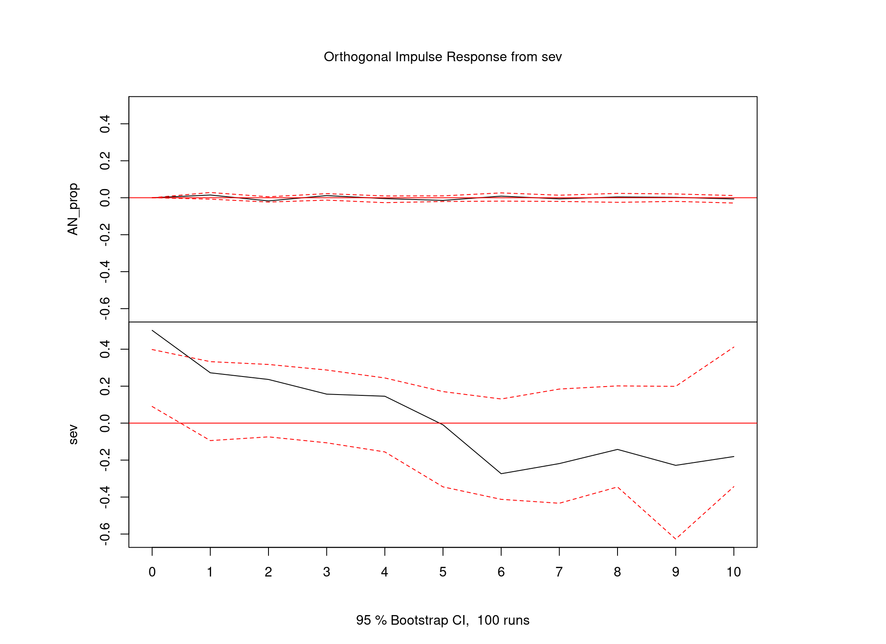

Last updated: 2023-08-02
Checks: 7 0
Knit directory: CoverCHILD/
This reproducible R Markdown analysis was created with workflowr (version 1.7.0). The Checks tab describes the reproducibility checks that were applied when the results were created. The Past versions tab lists the development history.
Great! Since the R Markdown file has been committed to the Git repository, you know the exact version of the code that produced these results.
Great job! The global environment was empty. Objects defined in the global environment can affect the analysis in your R Markdown file in unknown ways. For reproduciblity it’s best to always run the code in an empty environment.
The command set.seed(20221104) was run prior to running
the code in the R Markdown file. Setting a seed ensures that any results
that rely on randomness, e.g. subsampling or permutations, are
reproducible.
Great job! Recording the operating system, R version, and package versions is critical for reproducibility.
Nice! There were no cached chunks for this analysis, so you can be confident that you successfully produced the results during this run.
Great job! Using relative paths to the files within your workflowr project makes it easier to run your code on other machines.
Great! You are using Git for version control. Tracking code development and connecting the code version to the results is critical for reproducibility.
The results in this page were generated with repository version 7995c6f. See the Past versions tab to see a history of the changes made to the R Markdown and HTML files.
Note that you need to be careful to ensure that all relevant files for
the analysis have been committed to Git prior to generating the results
(you can use wflow_publish or
wflow_git_commit). workflowr only checks the R Markdown
file, but you know if there are other scripts or data files that it
depends on. Below is the status of the Git repository when the results
were generated:
Ignored files:
Ignored: .RData
Ignored: .Rhistory
Ignored: .Rproj.user/
Ignored: .gitignore~
Ignored: analysis/.Rhistory
Ignored: analysis/03_eating_disorder_stats.Rmd.bak
Ignored: analysis/_site.yml~
Ignored: analysis/style.css~
Ignored: archive/
Ignored: code/data_etl.R.bak
Ignored: code/eating_dis_cases.R.bak
Ignored: code/functions.R~
Ignored: data/Ergebnis_V2_PLZ_PID_Fall_pseudonym.csv
Ignored: data/ICD_V2.csv
Ignored: data/ICPM_V3.csv
Ignored: data/KIJUPSY_Med_Detail_V2_pseudonym.csv
Ignored: data/Labordaten_V3.csv
Ignored: data/P21_FAB_V1_pseudonym.csv
Ignored: data/P21_Fall_V1_pseudonym.csv
Ignored: data/P21_ICD_V1_pseudonym.csv
Ignored: data/P21_OPS_V1_pseudonym.csv
Ignored: data/Pers_Fall_V2_pseudonym.csv
Ignored: data/Rezepte_Pack_Wirkstoff_V4_pseudonym.csv
Ignored: data/UKF_patient_examples/
Ignored: data/ext/Auswertung C+ 01.01.2021-31.12.2022.xlsx
Ignored: data/ext/CoverChildDatenVerordnungen_Hessen_221110.xlsx
Ignored: data/ext/Diagnose Cluster NUM.docx
Ignored: data/ext/Diagnose_Cluster_NUM_sp.docx
Ignored: data/ext/Fachdisziplinen.pdf
Ignored: data/ext/ICPM_codesCoverChild_AGC.xlsx
Ignored: data/ext/KJP Behandlungstage 2022_20230109.xlsx
Ignored: data/ext/ZPID_lockdown_Arora_Schule.xlsx
Ignored: data/ext/ZPID_lockdown_Arora_Schule_sp.ods
Ignored: data/ext/ZPID_lockdown_measures_release_note-2.0.pdf
Ignored: data/ext/nonF AN Diagnosen und MEds.xlsx
Ignored: data/ext/nonF AN Diagnosen und MEds_sp.ods
Ignored: notes_2022-11-30.odt
Ignored: notes_221128
Ignored: notes_221128~
Ignored: notes_230320.txt
Ignored: notes_230320.txt~
Ignored: notes_etl.txt
Ignored: output/AN_Medikation_letzte_Woche.txt
Ignored: output/AN_somatische_Komorbiditäten.txt
Ignored: output/CoverCHILD_ED_stats_230217.zip
Ignored: output/CoverCHILD_ED_stats_230310.zip
Ignored: output/CoverCHILD_codebook_2023-07-13.csv
Ignored: output/CoverCHILD_codebook_2023-07-13.ods
Ignored: output/CoverCHILD_codebook_2023-07-25.csv
Ignored: output/CoverCHILD_codebook_sum_2023-07-13.csv
Ignored: output/CoverCHILD_codebook_sum_2023-07-25.csv
Ignored: output/CoverCHILD_codebooks_2023-06-15.ods
Ignored: output/CoverCHILD_codebooks_2023-06-15.xlsx
Ignored: output/CoverCHILD_dashboard_data_2023-06-26.rds
Ignored: output/CoverCHILD_dashboard_data_2023-07-25.rds
Ignored: output/CoverCHILD_data+EDvars_2023-03-28.rds
Ignored: output/CoverCHILD_data+EDvars_2023-04-24.rds
Ignored: output/CoverCHILD_data+EDvars_2023-05-16.rds
Ignored: output/CoverCHILD_data+EDvars_2023-06-12.rds
Ignored: output/CoverCHILD_data+EDvars_2023-06-19.rds
Ignored: output/CoverCHILD_data+EDvars_2023-06-21.rds
Ignored: output/CoverCHILD_data+EDvars_2023-06-22.rds
Ignored: output/CoverCHILD_data+EDvars_2023-06-26.rds
Ignored: output/CoverCHILD_data+EDvars_2023-07-12.rds
Ignored: output/CoverCHILD_data+EDvars_2023-07-25.rds
Ignored: output/CoverCHILD_data_230213.rds
Ignored: output/CoverCHILD_data_230215.rds
Ignored: output/CoverCHILD_data_230328.rds
Ignored: output/CoverCHILD_data_ETL_2023-03-28.RData.xz
Ignored: output/CoverCHILD_data_ETL_2023-05-16.RData.xz
Ignored: output/CoverCHILD_data_ETL_2023-06-01.RData.xz
Ignored: output/CoverCHILD_data_ETL_2023-06-12.RData.xz
Ignored: output/CoverCHILD_data_ETL_2023-06-19.RData.xz
Ignored: output/CoverCHILD_data_ETL_2023-06-21.RData.xz
Ignored: output/CoverCHILD_data_ETL_2023-06-22.RData.xz
Ignored: output/CoverCHILD_data_ETL_2023-06-26.RData.xz
Ignored: output/CoverCHILD_data_ETL_2023-07-25.RData
Ignored: output/CoverCHILD_data_ETL_2023-07-25.RData.xz
Ignored: output/CoverCHILD_data_exp_2023-07-25.rds
Ignored: output/CoverCHILD_data_exp_sum_2023-07-25.rds
Ignored: output/data_exp/
Ignored: output/data_utf8/
Ignored: output/ed_plots/
Ignored: output/fhir_etl/
Ignored: output/nicht-f-diagnosen.csv
Untracked files:
Untracked: .idea/
Untracked: code/fhir_etl.R
Untracked: code/fhir_etl.py
Untracked: code/join_close_cases.R
Untracked: code/summarise_per_case.R
Untracked: code/transform_target_dfs.R
Untracked: data/ext/icd_categories.txt
Untracked: t1_wflow.R
Untracked: t2_clar_case_merges.R
Untracked: t3_export_dashboard.R
Untracked: t4_treatment_sum.R
Untracked: variable_names.txt
Untracked: variable_names_clarify.txt
Untracked: variables_unify_per_case.txt
Note that any generated files, e.g. HTML, png, CSS, etc., are not included in this status report because it is ok for generated content to have uncommitted changes.
These are the previous versions of the repository in which changes were
made to the R Markdown
(analysis/03_eating_disorder_stats.Rmd) and HTML
(docs/03_eating_disorder_stats.html) files. If you’ve
configured a remote Git repository (see ?wflow_git_remote),
click on the hyperlinks in the table below to view the files as they
were in that past version.
| File | Version | Author | Date | Message |
|---|---|---|---|---|
| Rmd | df4002e | Simeon Platte | 2023-07-27 | Format ED markdowns, update links. |
| Rmd | a983cfd | Simeon Platte | 2023-07-26 | Reorder ED markdown files. |
| Rmd | 6b8422b | Simeon Platte | 2023-06-16 | Split ED notebook into: descriptives, plots, statistics/models. |
| Rmd | 48f7e63 | Simeon Platte | 2023-06-15 | Add plot for "share of re-admissions within 6 months" for ED notebook. |
| Rmd | e27dc2d | Simeon Platte | 2023-06-14 | Add plot of "share of AN cases during pandemic with baseline period comparison" to ED notebook. |
| Rmd | 839688a | Simeon Platte | 2023-06-09 | Add tests for ED data. |
| Rmd | dbaa7a7 | Simeon Platte | 2023-06-08 | Add lockdown severity to ED statistics. |
| Rmd | 94fb1c9 | Simeon Platte | 2023-06-08 | Add re-admission & first presentation to ED descriptives. |
| Rmd | ab21572 | Simeon Platte | 2023-06-01 | Add age range, co-occuring depression & anxiety, and psychotropic medication to ED descriptives. |
| Rmd | fa224b5 | Simeon Platte | 2023-05-17 | Include finer-grained school closure data in ZPID-format. |
| Rmd | 8f0ab15 | Simeon Platte | 2023-03-28 | Add lists of non-F comorbidites and discharge medication for AN cases. |
| Rmd | 57fb8fd | Simeon Platte | 2023-03-22 | Add readmission lags and counts for ED analysis. Update HTML format. |
| Rmd | 5d1a9b0 | Simeon Platte | 2023-03-14 | Update eating disorder stats for DGKJP meeting: Add statistical tests, update plots. |
| Rmd | 12954b4 | Simeon Platte | 2023-03-14 | Update HTML rendering style. Add option to create data from ETL pipeline or to load from saved state. |
| html | 07efcca | Simeon Platte | 2023-03-07 | Build site. |
| Rmd | 4118487 | Simeon Platte | 2023-03-07 | Adapt Eating disorder data processing & visualisation to updated data in normal form. |
| html | 8a9da8f | Simeon Platte | 2023-02-17 | Build site. |
| Rmd | 18cac1a | Simeon Platte | 2023-02-17 | Add ED subcategories to eating disorder stats. |
| html | 009ba47 | Simeon Platte | 2023-02-16 | Build site. |
| Rmd | 4aac73e | Simeon Platte | 2023-02-16 | Update observation periods for eating disorder stats html. |
| html | a650b43 | Simeon Platte | 2023-02-14 | Build site. |
| Rmd | b3b1ddb | Simeon Platte | 2023-02-14 | Publish eating disorder stats html. |
| Rmd | 6094d12 | Simeon Platte | 2023-02-14 | Add eating disorder data processing script & first stats Rmd. |
Note: Reported here are the uncorrected p-values. Controlling for FDR is done within the adjoined tables via Benjamini–Hochberg procedure.
kruskal.test(icd_f50 ~ covid_pan, df_ed)
Kruskal-Wallis rank sum test
data: icd_f50 by covid_pan
Kruskal-Wallis chi-squared = 22.542, df = 1, p-value = 2.056e-06kruskal.test(f50_type == "Anorexie" ~ covid_pan, df_ed)
Kruskal-Wallis rank sum test
data: f50_type == "Anorexie" by covid_pan
Kruskal-Wallis chi-squared = 24.251, df = 1, p-value = 8.457e-07kruskal.test(f50_type == "Bulimie" ~ covid_pan, df_ed)
Kruskal-Wallis rank sum test
data: f50_type == "Bulimie" by covid_pan
Kruskal-Wallis chi-squared = 0.51291, df = 1, p-value = 0.4739kruskal.test(f50_type == "Essstörung Sonst." ~ covid_pan, df_ed)
Kruskal-Wallis rank sum test
data: f50_type == "Essstörung Sonst." by covid_pan
Kruskal-Wallis chi-squared = 1.6758, df = 1, p-value = 0.1955oneway.test(age_adm ~ covid_pan, df_ed)
One-way analysis of means (not assuming equal variances)
data: age_adm and covid_pan
F = 2.5415, num df = 1.0, denom df = 2092.9, p-value = 0.111oneway.test(age_adm ~ covid_pan, df_ed %>% filter(icd_f50 == "F50+"))
One-way analysis of means (not assuming equal variances)
data: age_adm and covid_pan
F = 0.017303, num df = 1.00, denom df = 355.23, p-value = 0.8954oneway.test(age_adm ~ covid_pan, df_ed %>% filter(icd_f50 == "F50-"))
One-way analysis of means (not assuming equal variances)
data: age_adm and covid_pan
F = 1.3801, num df = 1.0, denom df = 1673.7, p-value = 0.2403kruskal.test(sex ~ covid_pan, df_ed)
Kruskal-Wallis rank sum test
data: sex by covid_pan
Kruskal-Wallis chi-squared = 20.304, df = 1, p-value = 6.607e-06kruskal.test(sex ~ covid_pan, df_ed %>% filter(icd_f50 == "F50+"))
Kruskal-Wallis rank sum test
data: sex by covid_pan
Kruskal-Wallis chi-squared = 0.075915, df = 1, p-value = 0.7829kruskal.test(sex ~ covid_pan, df_ed %>% filter(icd_f50 == "F50-"))
Kruskal-Wallis rank sum test
data: sex by covid_pan
Kruskal-Wallis chi-squared = 13.404, df = 1, p-value = 0.0002511oneway.test(n_icd_code ~ covid_pan, df_ed)
One-way analysis of means (not assuming equal variances)
data: n_icd_code and covid_pan
F = 7.1497, num df = 1.0, denom df = 1941.6, p-value = 0.00756oneway.test(n_icd_code ~ covid_pan, df_ed %>% filter(icd_f50 == "F50+"))
One-way analysis of means (not assuming equal variances)
data: n_icd_code and covid_pan
F = 0.26117, num df = 1.00, denom df = 355.79, p-value = 0.6096oneway.test(n_icd_code ~ covid_pan, df_ed %>% filter(icd_f50 == "F50-"))
One-way analysis of means (not assuming equal variances)
data: n_icd_code and covid_pan
F = 6.6111, num df = 1.0, denom df = 1541.3, p-value = 0.01023oneway.test(n_icd_f ~ covid_pan, df_ed)
One-way analysis of means (not assuming equal variances)
data: n_icd_f and covid_pan
F = 12.882, num df = 1.0, denom df = 1857.5, p-value = 0.0003404oneway.test(n_icd_f ~ covid_pan, df_ed %>% filter(icd_f50 == "F50+"))
One-way analysis of means (not assuming equal variances)
data: n_icd_f and covid_pan
F = 0.0010341, num df = 1.00, denom df = 342.93, p-value = 0.9744oneway.test(n_icd_f ~ covid_pan, df_ed %>% filter(icd_f50 == "F50-"))
One-way analysis of means (not assuming equal variances)
data: n_icd_f and covid_pan
F = 11.251, num df = 1.0, denom df = 1495.4, p-value = 0.0008156oneway.test(n_icd_other ~ covid_pan, df_ed)
One-way analysis of means (not assuming equal variances)
data: n_icd_other and covid_pan
F = 0.67065, num df = 1.0, denom df = 2119.9, p-value = 0.4129oneway.test(n_icd_other ~ covid_pan, df_ed %>% filter(icd_f50 == "F50+"))
One-way analysis of means (not assuming equal variances)
data: n_icd_other and covid_pan
F = 1.3817, num df = 1.00, denom df = 355.98, p-value = 0.2406oneway.test(n_icd_other ~ covid_pan, df_ed %>% filter(icd_f50 == "F50-"))
One-way analysis of means (not assuming equal variances)
data: n_icd_other and covid_pan
F = 0.33541, num df = 1.0, denom df = 1689.8, p-value = 0.5626kruskal.test(icd_dd ~ covid_pan, df_ed)
Kruskal-Wallis rank sum test
data: icd_dd by covid_pan
Kruskal-Wallis chi-squared = 28.221, df = 1, p-value = 1.082e-07kruskal.test(icd_dd ~ covid_pan, df_ed %>% filter(icd_f50 == "F50+"))
Kruskal-Wallis rank sum test
data: icd_dd by covid_pan
Kruskal-Wallis chi-squared = 0.020356, df = 1, p-value = 0.8865kruskal.test(icd_dd ~ covid_pan, df_ed %>% filter(icd_f50 == "F50-"))
Kruskal-Wallis rank sum test
data: icd_dd by covid_pan
Kruskal-Wallis chi-squared = 28.757, df = 1, p-value = 8.206e-08kruskal.test(icd_ad ~ covid_pan, df_ed)
Kruskal-Wallis rank sum test
data: icd_ad by covid_pan
Kruskal-Wallis chi-squared = 1.0528, df = 1, p-value = 0.3049kruskal.test(icd_ad ~ covid_pan, df_ed %>% filter(icd_f50 == "F50+"))
Kruskal-Wallis rank sum test
data: icd_ad by covid_pan
Kruskal-Wallis chi-squared = 0.11299, df = 1, p-value = 0.7368kruskal.test(icd_ad ~ covid_pan, df_ed %>% filter(icd_f50 == "F50-"))
Kruskal-Wallis rank sum test
data: icd_ad by covid_pan
Kruskal-Wallis chi-squared = 0.59434, df = 1, p-value = 0.4407kruskal.test(icd_f50_dd_ad ~ covid_pan, df_ed)
Kruskal-Wallis rank sum test
data: icd_f50_dd_ad by covid_pan
Kruskal-Wallis chi-squared = 11.104, df = 1, p-value = 0.0008615oneway.test(length_stay_brutto ~ covid_pan, df_ed)
One-way analysis of means (not assuming equal variances)
data: length_stay_brutto and covid_pan
F = 64.807, num df = 1.0, denom df = 2391.9, p-value = 1.288e-15oneway.test(length_stay_brutto ~ covid_pan, df_ed %>% filter(icd_f50 == "F50+"))
One-way analysis of means (not assuming equal variances)
data: length_stay_brutto and covid_pan
F = 9.2891, num df = 1.00, denom df = 356.82, p-value = 0.002477oneway.test(length_stay_brutto ~ covid_pan, df_ed %>% filter(icd_f50 == "F50-"))
One-way analysis of means (not assuming equal variances)
data: length_stay_brutto and covid_pan
F = 74.767, num df = 1.0, denom df = 2069.5, p-value < 2.2e-16oneway.test(length_stay_brutto ~ covid_pan, df_ed %>% filter(icd_f50_dd_ad))
One-way analysis of means (not assuming equal variances)
data: length_stay_brutto and covid_pan
F = 7.9677, num df = 1.00, denom df = 150.74, p-value = 0.005405chisq.test(matrix(re_adm_table$combined, nrow = 2))
Pearson's Chi-squared test with Yates' continuity correction
data: matrix(re_adm_table$combined, nrow = 2)
X-squared = 0.0078019, df = 1, p-value = 0.9296chisq.test(matrix(re_adm_table$F50plus, nrow = 2))
Pearson's Chi-squared test with Yates' continuity correction
data: matrix(re_adm_table$F50plus, nrow = 2)
X-squared = 0.093933, df = 1, p-value = 0.7592chisq.test(matrix(re_adm_table$F50minus, nrow = 2))
Pearson's Chi-squared test with Yates' continuity correction
data: matrix(re_adm_table$F50minus, nrow = 2)
X-squared = 0, df = 1, p-value = 1kruskal.test(re_adm_soon_nona ~ covid_pan, df_ed)
Kruskal-Wallis rank sum test
data: re_adm_soon_nona by covid_pan
Kruskal-Wallis chi-squared = 5.8283, df = 1, p-value = 0.01577kruskal.test(re_adm_soon_nona ~ covid_pan, df_ed %>% filter(icd_f50 == "F50+"))
Kruskal-Wallis rank sum test
data: re_adm_soon_nona by covid_pan
Kruskal-Wallis chi-squared = 0.010877, df = 1, p-value = 0.9169kruskal.test(re_adm_soon_nona ~ covid_pan, df_ed %>% filter(icd_f50 == "F50-"))
Kruskal-Wallis rank sum test
data: re_adm_soon_nona by covid_pan
Kruskal-Wallis chi-squared = 6.1646, df = 1, p-value = 0.01303kruskal.test(psych_med ~ covid_pan, df_ed)
Kruskal-Wallis rank sum test
data: psych_med by covid_pan
Kruskal-Wallis chi-squared = 0.33811, df = 1, p-value = 0.5609kruskal.test(psych_med ~ covid_pan, df_ed %>% filter(icd_f50 == "F50+"))
Kruskal-Wallis rank sum test
data: psych_med by covid_pan
Kruskal-Wallis chi-squared = 0.24375, df = 1, p-value = 0.6215kruskal.test(psych_med ~ covid_pan, df_ed %>% filter(icd_f50 == "F50-"))
Kruskal-Wallis rank sum test
data: psych_med by covid_pan
Kruskal-Wallis chi-squared = 0.20684, df = 1, p-value = 0.6493kruskal.test(icd_f50 ~ covid_lockd_sev, df_ed_covid)
Kruskal-Wallis rank sum test
data: icd_f50 by covid_lockd_sev
Kruskal-Wallis chi-squared = 1.2828, df = 2, p-value = 0.5266kruskal.test(f50_type == "Anorexie" ~ covid_lockd_sev, df_ed_covid)
Kruskal-Wallis rank sum test
data: f50_type == "Anorexie" by covid_lockd_sev
Kruskal-Wallis chi-squared = 1.3137, df = 2, p-value = 0.5185kruskal.test(f50_type == "Bulimie" ~ covid_lockd_sev, df_ed_covid)
Kruskal-Wallis rank sum test
data: f50_type == "Bulimie" by covid_lockd_sev
Kruskal-Wallis chi-squared = 1.812, df = 2, p-value = 0.4041kruskal.test(f50_type == "Essstörung Sonst." ~ covid_lockd_sev, df_ed_covid)
Kruskal-Wallis rank sum test
data: f50_type == "Essstörung Sonst." by covid_lockd_sev
Kruskal-Wallis chi-squared = 1.8778, df = 2, p-value = 0.3911kruskal.test(icd_f50_dd_ad ~ covid_lockd_sev, df_ed_covid)
Kruskal-Wallis rank sum test
data: icd_f50_dd_ad by covid_lockd_sev
Kruskal-Wallis chi-squared = 4.329, df = 2, p-value = 0.1148kruskal.test(icd_f50 ~ covid_pan, create_covid_period_baseline_df(1))
Kruskal-Wallis rank sum test
data: icd_f50 by covid_pan
Kruskal-Wallis chi-squared = 0.21749, df = 1, p-value = 0.641kruskal.test(icd_f50 ~ covid_pan, create_covid_period_baseline_df(2))
Kruskal-Wallis rank sum test
data: icd_f50 by covid_pan
Kruskal-Wallis chi-squared = 2.7241, df = 1, p-value = 0.09884kruskal.test(icd_f50 ~ covid_pan, create_covid_period_baseline_df(3))
Kruskal-Wallis rank sum test
data: icd_f50 by covid_pan
Kruskal-Wallis chi-squared = 0.17994, df = 1, p-value = 0.6714kruskal.test(icd_f50 ~ covid_pan, create_covid_period_baseline_df(4))
Kruskal-Wallis rank sum test
data: icd_f50 by covid_pan
Kruskal-Wallis chi-squared = 6.2879, df = 1, p-value = 0.01216kruskal.test(icd_f50 ~ covid_pan, create_covid_period_baseline_df(5))
Kruskal-Wallis rank sum test
data: icd_f50 by covid_pan
Kruskal-Wallis chi-squared = 25.175, df = 1, p-value = 5.235e-07grangertest(AN_prop ~ as.numeric(covid_lockd_sev), order = 6, data = df_ed_covid_monthly)Registered S3 method overwritten by 'quantmod':
method from
as.zoo.data.frame zoo
Augmented Dickey-Fuller Test
data: df_ed_covid_monthly$AN_prop
Dickey-Fuller = -2.2633, Lag order = 6, p-value = 0.4721
alternative hypothesis: stationaryLoading required package: MASS
Attaching package: 'MASS'The following object is masked from 'package:dplyr':
selectLoading required package: strucchangeLoading required package: sandwich
Attaching package: 'strucchange'The following object is masked from 'package:stringr':
boundaryLoading required package: urca
Attaching package: 'vars'The following object is masked from 'package:DescTools':
Phi
sessionInfo()R version 4.3.1 (2023-06-16)
Platform: x86_64-pc-linux-gnu (64-bit)
Running under: Ubuntu 22.04.2 LTS
Matrix products: default
BLAS: /usr/lib/x86_64-linux-gnu/blas/libblas.so.3.10.0
LAPACK: /usr/lib/x86_64-linux-gnu/lapack/liblapack.so.3.10.0
locale:
[1] LC_CTYPE=en_US.UTF-8 LC_NUMERIC=C
[3] LC_TIME=de_DE.UTF-8 LC_COLLATE=en_US.UTF-8
[5] LC_MONETARY=de_DE.UTF-8 LC_MESSAGES=en_US.UTF-8
[7] LC_PAPER=de_DE.UTF-8 LC_NAME=C
[9] LC_ADDRESS=C LC_TELEPHONE=C
[11] LC_MEASUREMENT=de_DE.UTF-8 LC_IDENTIFICATION=C
time zone: Europe/Berlin
tzcode source: system (glibc)
attached base packages:
[1] tools stats graphics grDevices utils datasets methods
[8] base
other attached packages:
[1] vars_1.5-9 urca_1.3-3 strucchange_1.5-3
[4] sandwich_3.0-2 MASS_7.3-60 tseries_0.10-54
[7] knitr_1.43 lmtest_0.9-39 zoo_1.8-12
[10] janitor_2.2.0 glue_1.6.2 rlang_1.1.1
[13] DescTools_0.99.49 psych_2.3.6 ggVennDiagram_1.2.2
[16] magrittr_2.0.3 lubridate_1.9.2 forcats_1.0.0
[19] stringr_1.5.0 dplyr_1.1.2 purrr_1.0.1
[22] readr_2.1.4 tidyr_1.3.0 tibble_3.2.1
[25] ggplot2_3.4.2 tidyverse_2.0.0 workflowr_1.7.0
loaded via a namespace (and not attached):
[1] tidyselect_1.2.0 Exact_3.2 rootSolve_1.8.2.3 fastmap_1.1.1
[5] promises_1.2.0.1 digest_0.6.33 timechange_0.2.0 lifecycle_1.0.3
[9] processx_3.8.2 lmom_2.9 compiler_4.3.1 sass_0.4.7
[13] utf8_1.2.3 yaml_2.3.7 data.table_1.14.8 curl_5.0.0
[17] mnormt_2.1.1 TTR_0.24.3 expm_0.999-7 withr_2.5.0
[21] grid_4.3.1 fansi_1.0.4 git2r_0.32.0 xts_0.13.1
[25] e1071_1.7-13 colorspace_2.1-0 scales_1.2.1 cli_3.6.1
[29] mvtnorm_1.2-2 rmarkdown_2.23 generics_0.1.3 rstudioapi_0.15.0
[33] httr_1.4.6 tzdb_0.4.0 readxl_1.4.3 gld_2.6.6
[37] cachem_1.0.8 proxy_0.4-27 parallel_4.3.1 cellranger_1.1.0
[41] vctrs_0.6.3 boot_1.3-28 Matrix_1.6-0 jsonlite_1.8.7
[45] callr_3.7.3 hms_1.1.3 jquerylib_0.1.4 quantmod_0.4.24
[49] ps_1.7.5 stringi_1.7.12 gtable_0.3.3 RVenn_1.1.0
[53] later_1.3.1 quadprog_1.5-8 munsell_0.5.0 pillar_1.9.0
[57] htmltools_0.5.5 R6_2.5.1 rprojroot_2.0.3 evaluate_0.21
[61] lattice_0.21-8 highr_0.9 snakecase_0.11.0 httpuv_1.6.11
[65] bslib_0.5.0 class_7.3-22 Rcpp_1.0.11 nlme_3.1-162
[69] whisker_0.4 xfun_0.39 fs_1.6.3 getPass_0.2-2
[73] pkgconfig_2.0.3